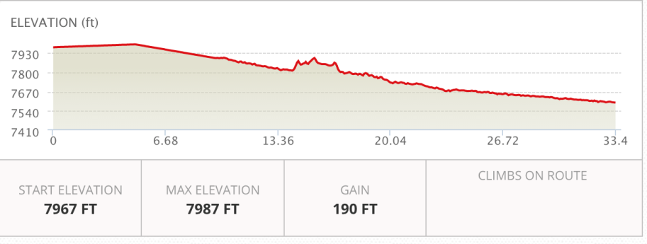
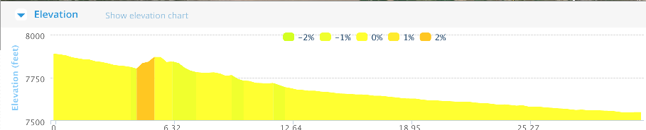
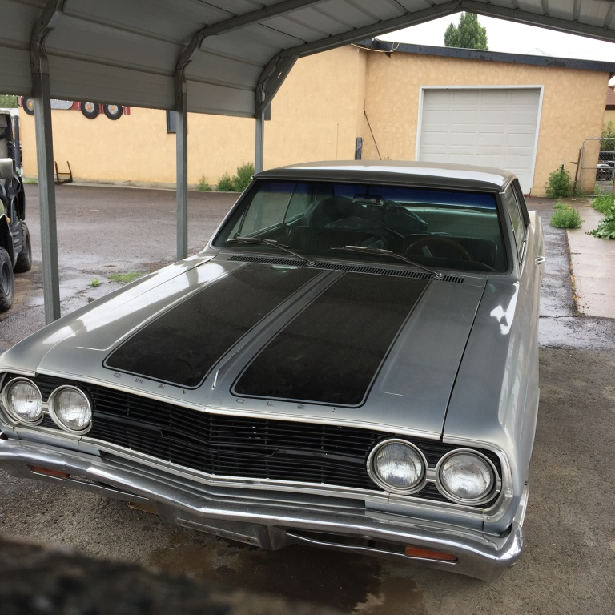
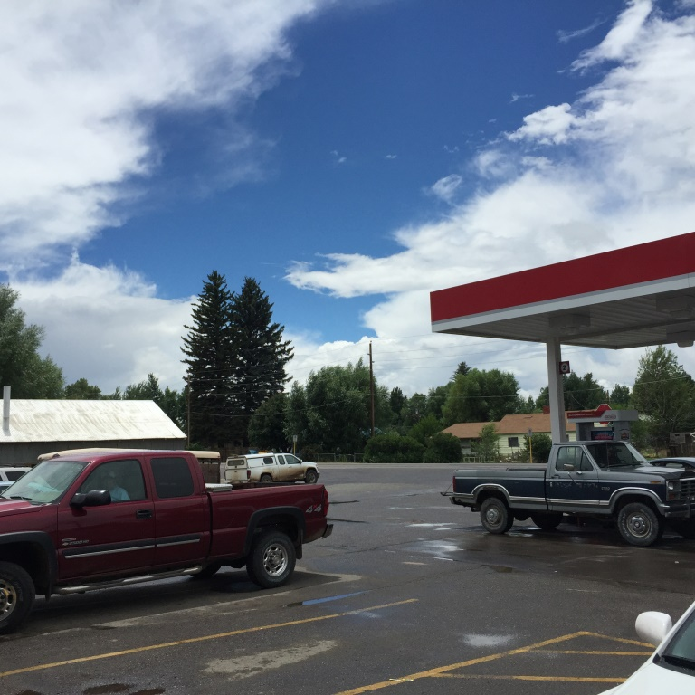
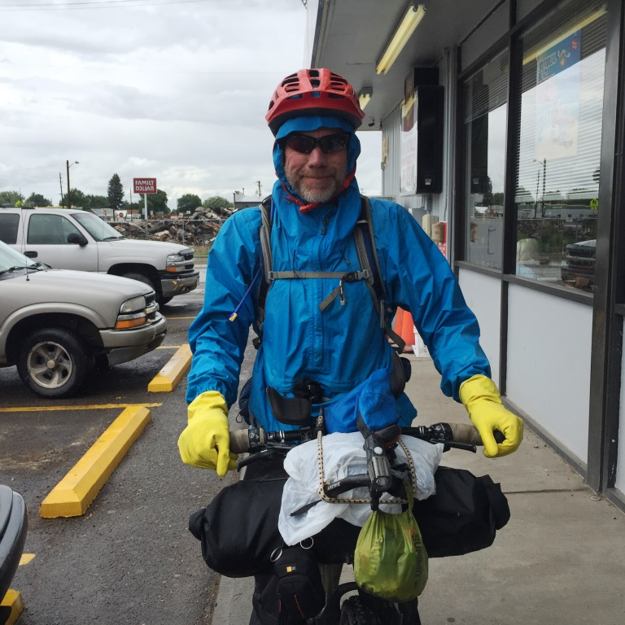
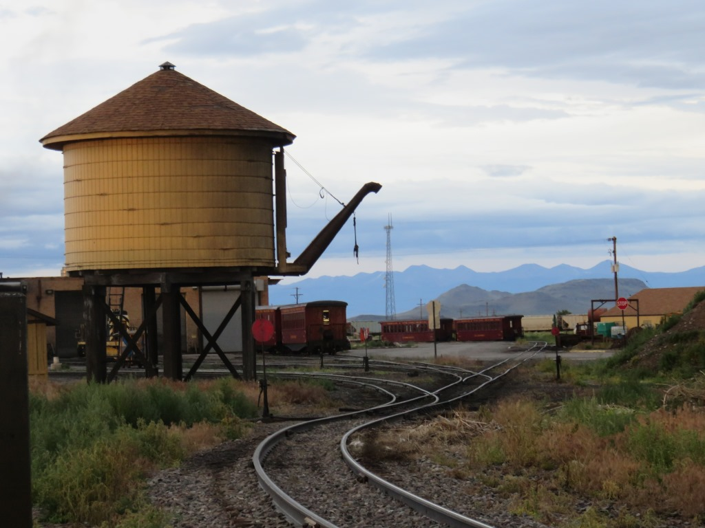

Morning in Del Norte
I woke up about 6am and it was raining. I was able to look at the weather maps and see that the trail for the day would be underneath some nasty weather all day. I texted with Rob and Andrew and they had decided to take another rest day since they had just arrived Monday night. Since I had already taken a rest day I decided to skip Indian Pass and take the highway around it.


RT 160 and US285
With the rain, I stopped in each of the small towns along the way. In Monte Vista I considered taking the side roads to avoid the traffic but soon realized that riding in the rain is even less fun when you on a crappy gravel road. So I returned to the US highways.

The Chevelle was for sale. I thought that maybe this was a better way to get to Mexico.
Quick stop to get out of the rain.I stopped in a McDonalds in Alamosa for a long break and to dry out a bit. In LaJara it was still raining and I wanted to buy the 67 Chevelle and drive it home. I had a few breaks of sun but they didn't really last.

No such thing as bad weather only bad equipment.My rain gear held up very well. I may have looked like I was working in a meth lab but I was glad to be dry.
Antonito, CO
Antonito had two hotels but the nicer one was full so I ended up at the Narrow Gauge Railroad Inn which provided a nice view of the approaching thunderstorms. Their was a restaurant next door so after getting my clothes dry at the laundromat in town I went there for dinner.
Narrow Gauge Railroad
The rail yard was at the south end of town right next to my hotel.

You can take a Steam engine trip from Antonito up through the mountains to Chama
July 7 - Del Norte to Antonito, CO
This was my last day in Colorado. It took 9 days to get thru the state. I'd had some good days where I covered over 100 miles and then a bunch of days were I did 50 or 60. I was happy to be moving on to New Mexico. I had a reasonably good plan for getting to the Mexico border. After 29 days on the road I thought I had somewhere between 7 and 10 days to go.
See full screen map To go places and do things that I've never done before – that’s what living is all about.Text by Jim O'Brien . Photographs by Jim O'BrienTD on Flickr.